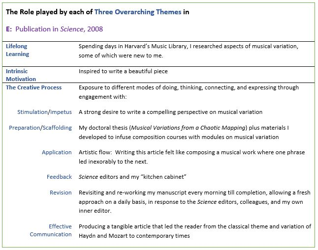

October 28, 2007 turned out to be one of those days where in the morning, the electrical engineering side of me was giving an invited plenary for the 2007 International Conference on Complex Systems entitled “Engineering Chaos and Musical Variation” and the musical side was rushing to a dress rehearsal of the Olin Conductorless Orchestra for an afternoon performance of Haydn and Beethoven for the Fall Admissions Open House. It was a memorable day, one that also contained a surprise.
A senior editor from the journal Science was in the audience during the presentation I gave on my work with musical variation and chaos theory at the Complex Systems Conference. A month later, I received an email from the Perspectives editor of Science asking if I would write an article on creating musical variation that would set the context for my work, including audio examples. Writing that article felt like writing a piece of music: complete engagement as one thought flowed to the next.
“Creating Musical Variation” traces the development of musical variation from Mozart and Haydn to Stravinsky, Pierre Henri, and John Cage, from theorists Johann Riepel to Arnold Schönberg—all of whom provided context for my new variation technique. The article opens with a fact gleaned from primary source material: “In the 21 letters that Mozart wrote to his friend Michael Puchberg between 1788 and 1791, there exist at least 24 variants of the supplication ‘Brother, can you spare a dime?’” Mozart varies his theme of “cash needed now” in much the same way 18th century composers wove additional notes around a theme in order to create a variation. Later composers conceived different forms of musical variation, ranging from Stravinsky’s ‘matrix-like’ array of pitches to create his Variations for orchestra to Cage’s completely random approach in his Variations IV where any number of ‘players’ can show up and perform by ‘playing’ radios, noise-makers, and even instruments. However, if a composer wants to vary an entire work from one hearing to the next, and even from performance to performance, without Cage’s randomness, a different kind of variation technique can be applied—one that uses a chaotic mapping to make musical variations of the entire work. I designed this technique to harness a natural mechanism for variability found in the science of chaos: the sensitivity of chaotic trajectories to initial conditions. Though most engineers seek to avoid chaotic dynamic behavior, I tamed and tempered it for musical variation. Science gave me a great opportunity to set the context for my work in a highly regarded journal.
The full Science article, “Creating Musical Variation", can be found here.
In sum, my invited Perspectives article, “Creating Musical Variation”, demonstrates Leadership and Impact with respect to Olin’s faculty goal of External Impact (Map 1), by virtue of its publication in Science. The article fuses the disciplines of music and engineering (Map 2). The table below succinctly captures the role played by each of my three overarching themes in Project E, thus elaborating on Map 3.
